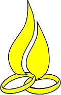

Spotkania Małżeńskie są ruchem rekolekcyjnym mającym na celu pogłębianie więzi małżeńskiej i głębszym
zrozumieniu męża i żony. Pełniejsze doświadczenie sakramentalnego wymiaru związku dokonuje się poprzez
dialog małżeński dzięki któremu mąż i żona mogą lepiej poznać się nawzajem. Jest też drogą do
porozumienia w przypadku wzajemnego niezrozumienia się i pomocą w rozwiązaniu konfliktów pomiędzy
małżonkami.